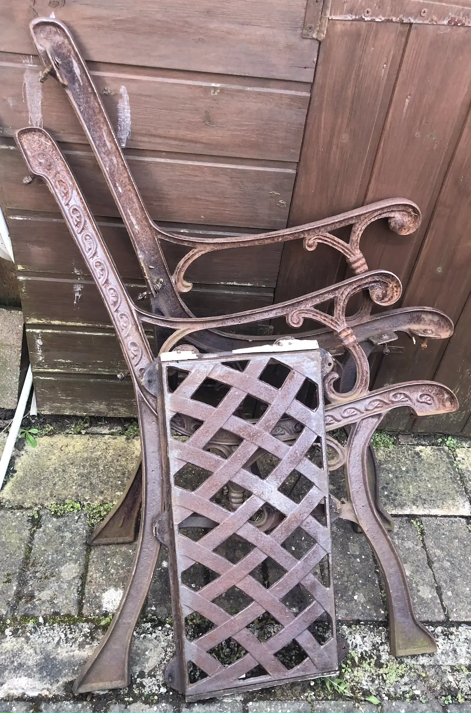
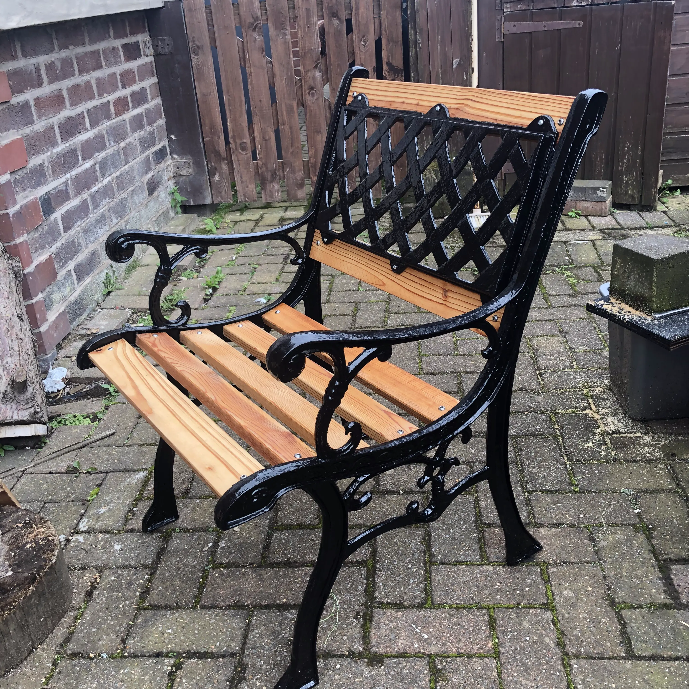

Refurbishing Garden Items
I love bin days.
There's the opportunity to feel superior about how some people mismanage their recycling. Or don't realise that they really shouldn't leave their brown sacks on the ground so every male dog in the area can use them as target practice!
And there are sometimes opportunities to find things that other people don't want, but that actually might be useful.
In the past, I might have spotted such items and left them to someone else. However, I recently hauled home a rusted garden chair that I felt sure I could bring back to life.
Definitely unloved, I think you'll agree, but structurally OK.
There were slight remnants of the wooden parts left clinging to rusted bolts. And those bolts took a fair amount of brute force to remove - thank goodness for husbands! But eventually I had the parts separated and ready for refurbishing.
Out came the drill and a rotary wire brush. When I got fed up of the noise (or thought the neighbours might be ready to lynch me), I deployed a hand held wire brush and finally got to a point where the surfaces were smooth enough. They weren't perfect by any means, but, for an object that is going to spend its time outdoors, a few blemishes could be overlooked.
After a rub down with white spirit to clean the dust and debris, I dug out an old pot of metal paint. I intended to reuse what resources we had in the household if I could. While I might have liked rainbow hues, it was going to be black.
A few coats of paint transformed the metal. It now definitely had potential.
On to the seat...
I salvage wood from various pieces of furniture that are no longer useful and can't find another home. The slats and chunkier boards from a wooden bed were just right to be repurposed. They just needed to be cut to size, bolt holes drilled in them and rubbed with oil.
Re-assembling the seat was a challenge, but I got there in the end by temporarily connecting parts of the frame together with an old piece of wood while I inserted the seat pieces.
I contemplated using old nuts and bolts that we had in the tool store, but after all my hard work I wanted something that wasn't going to rust immediately. So I admit I purchased some stainless steel hardware. The descriptions of bolts seem unnecessarily complicated and it took a lot of googling to ensure I was buying pieces of the right length and diameter.
Just another coat of oil to the wood and retouches to the paint where I'd chipped it...then it was finished!
Now all I need to do is relocate it to a more picturesque part of the garden, hope the sun comes out, and ensure that I have a beverage in my hand while relaxing.
Kuma has already deemed it a suitable spot for lounging around!